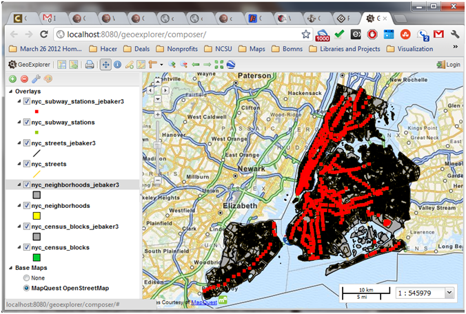
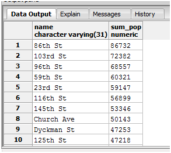
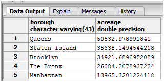
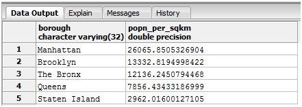
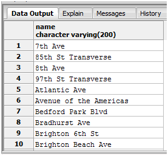
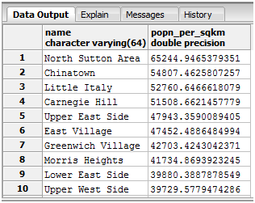
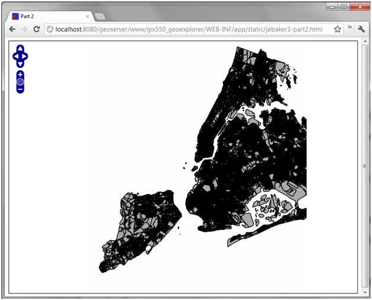
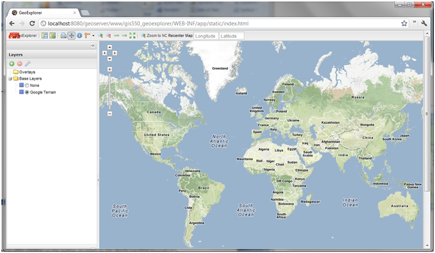
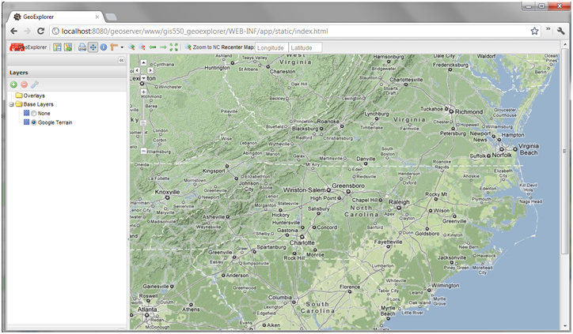
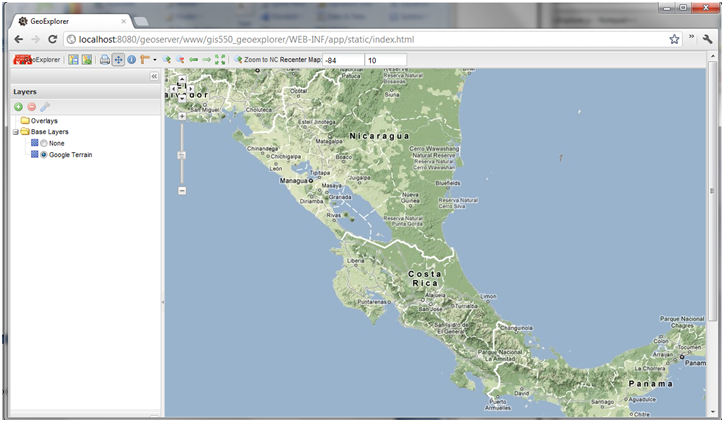

Open Source GIS
In this section of the course, we took a turn away from the ESRI ArcGIS environment and explored open source solutions for web based GIS applications. Open source software may not always be as robust or well supported as its closed source counterparts, but it clearly is a better option for some situations given its cost (free!), the availablility of source code, and the strong community that has grown up around it. While some open source GIS projects are still playing catch-up, many are now well developed and the gaps in reliabillity and ease-of-use are quickly eroding.
OpenGeo Suite
For the projects in this section, we utilized the OpenGeo Suite, which is a packaged and commercially supported full stack system consisting of many different components. On the database side, it uses PostgreSQL similar to what we had used in ArcGIS Server, except with PostGIS to enable spatial data. There are a number of web-based components to support the server-based data. GeoServer allows for the management of the storage, sharing, organization, and projection of spatial data within the system. GeoWebCache, which we did not explore in this course, provides fast caching services for tile-based map images. GeoEditor is a web-based interactive GIS system not unlike ArcGIS for the desktop. GeoExplorer is more oriented towards end users for exploring, rather than editing, data. Finally, Styler is included as a tool for definiting the presentation of the data.
Most of the work we did revolved around data in New York City, including streets, census tracts, boroughs, and subway locations, which we had to load into the GeoServer system and project properly. Below is a view of this data as displayed in GeoExplorer

Spatial SQL
Just as we had worked with structured query language to help us answer questions about tabular data, in this unit we explored the ways that SQL can be used to answer questions about spatial data as well. The functions available to a spatial SQL system are somewhat less standardized than the basic tabular SQL query components we had worked with previously, but the PostGIS reference provided the information necessary to access the proper functions in this system. Provided below are some sample queries and their results, as executed in PgAdmin III.
Which subway station has the maximum number of people living within 300 meters? How many people live there?
SELECT s.name, Sum(c.popn_total) As sum_pop FROM nyc_census_blocks as c join nyc_subway_stations as s on ST_DWithin(c.the_geom,s.the_geom,300) GROUP BY s.name ORDER BY sum_pop DESC;

Which boroname has the largest area in New York City? What's its
area in acres?
SELECT boroname as borough, Sum(ST_Area(the_geom)) / 4047 AS acreage FROM nyc_neighborhoods GROUP BY nyc_neighborhoods.boroname ORDER BY acreage DESC;

Which boroname has the highest population density?
SELECT c.boroname as borough, Sum(c.popn_total) / Sum(ST_Area(c.the_geom)) * 1000000 AS popn_per_sqkm FROM nyc_census_blocks as c GROUP BY c.boroname ORDER BY popn_per_sqkm DESC;

What are all the streets with a B-train stop within 50 meters?
SELECT DISTINCT st.name FROM nyc_subway_stations AS s JOIN nyc_streets AS st ON ST_DWithin(st.the_geom,s.the_geom,50) WHERE strpos(s.routes,'B') > 0 ORDER BY st.name;

Which neighborhood has the hightest population density in
nyc_neighborhoods? What's the
hightest population density (in people / km^2)?
SELECT n.name, Sum(c.popn_total) / (ST_Area(n.the_geom) / 1000000.0) AS popn_per_sqkm FROM nyc_census_blocks AS c JOIN nyc_neighborhoods AS n ON ST_Intersects(c.the_geom, n.the_geom) GROUP BY n.name, n.the_geom ORDER BY popn_per_sqkm DESC;

JavaScript & Code Structures
Since all of the web-based GIS applications implement their client-side scripting in JavaScript, we spent a good portion of the course exploring JavaScript syntax and some of the necessary libraries which are utilized by GeoExplorer. JavaScript is a scripting language commonly used in the browser environment to extend HTML, which has a similar syntax to Java. The libraries we explored include ExtJS, GeoExt, and OpenLayers. By using these tools and libraries in combination, very complex web application customization is possible. JavaScript is embedded within HTML directly or linked as an included file, which allows elements on a webpage to function interactively.
OpenLayers
After using a few very basic examples to practice with the JavaScript syntax, our first homework to integrate this technology with a mapping application was to develop code to display some of the New York City data being served from our local server implentations through a simple web interface using OpenLayers. Though fairly straightforward, this framework can be extended greatly for additional display and interaction options. We also repeated the process using the GeoExt library to create the map frame.

GeoExplorer
The final piece of this portion of the course was to customize the GeoExplorer application to include additional functionality. The first task was to create a button which changed the bounds of the map to zoom in on the boundaries of the state of North Carolina. The second was to allow the user to interactively set the center of the map by entering longitude and latitude coordinates. While not terribly complex, these customizations are meant to demonstrate the method for accessing map data and interacting with it on the client side. Once this is done, the range of possible functions which could be accomplished through client side mapping are enormous.
This is what the map looks like before using either of the tools I implemented.

This is the view after clicking on the button to zoom to the North Carolina boundaries.

This is the view after entering approximate coordinates for San José, Costa Rica, which is about (-84, 10).

Reflection
I was particularly glad to have the opportunity to work with some of the open source based tools, for a number of reasons. I strongly believe that open source solutions are an important part of the geospatial software ecosystem. As a long-time Linux user, I was happy to be able to work with tools that would run natively on a *nix system. Philosophically, I think it is important for there to be low-cost options available, both for production environments and to provide opportunities for the average user to "look under the hood" if they so choose. By allowing users of software systems complete access to the underlying source code behind GIS system, it allows the provider to customize the end user's experience to the maximum possible degree, only limited by factors like staff time. But just as importantly, personally, becoming familiar with this software may have immediate benefits. While I don't have the resources available to acquire an ArcGIS Server license for every pet project or nonprofit I have wanted to set up a web mapping application for, a fully open sourced stack like OpenGeo Suite makes it possible for me to bring GIS access to a larger audience without software acquisition costs.